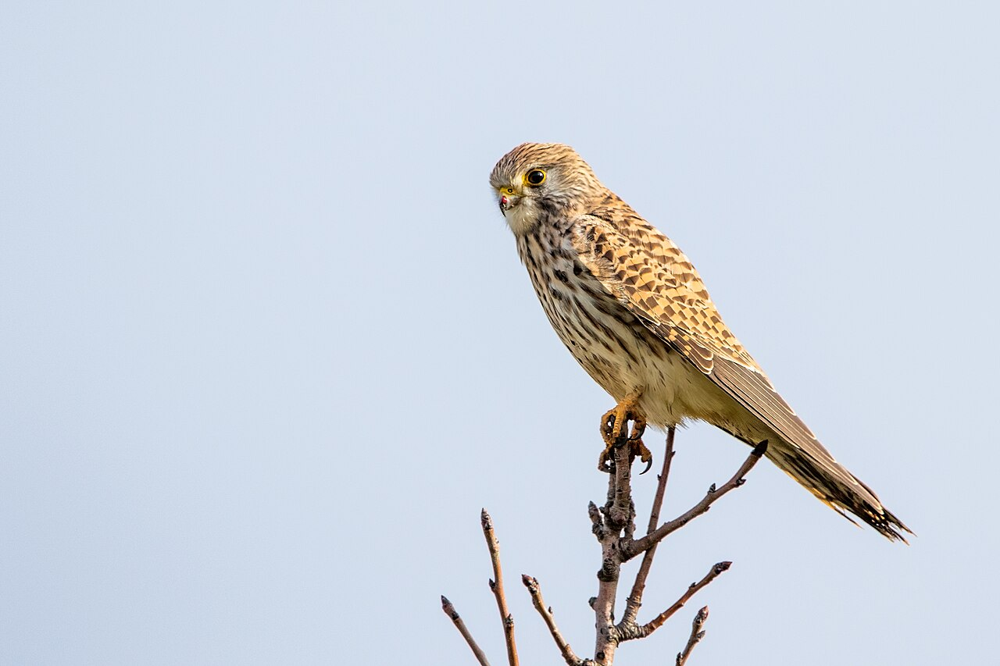
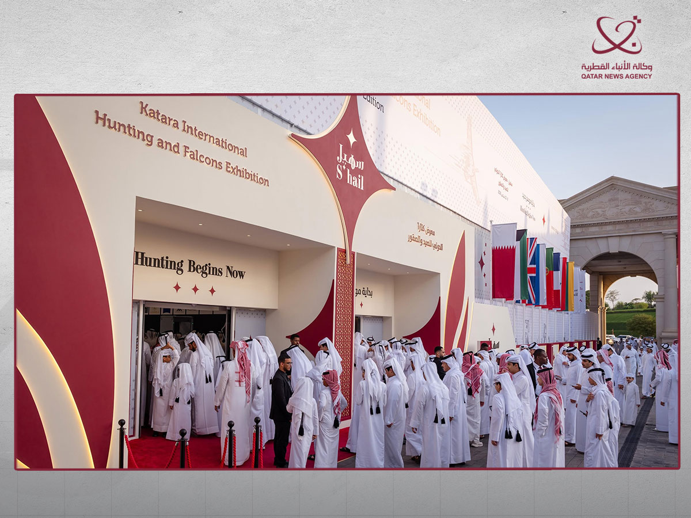
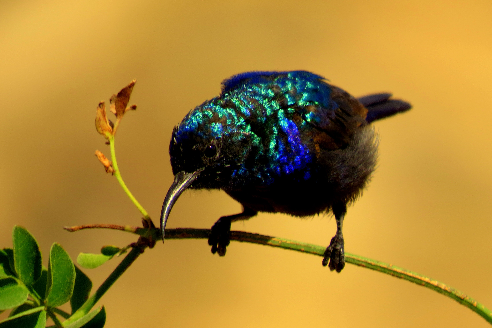
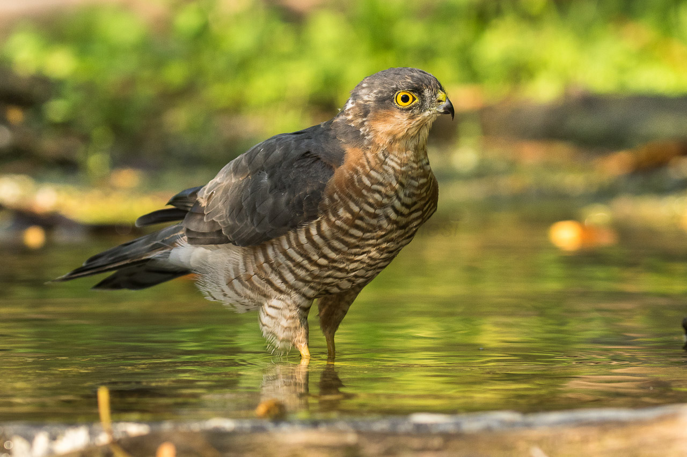
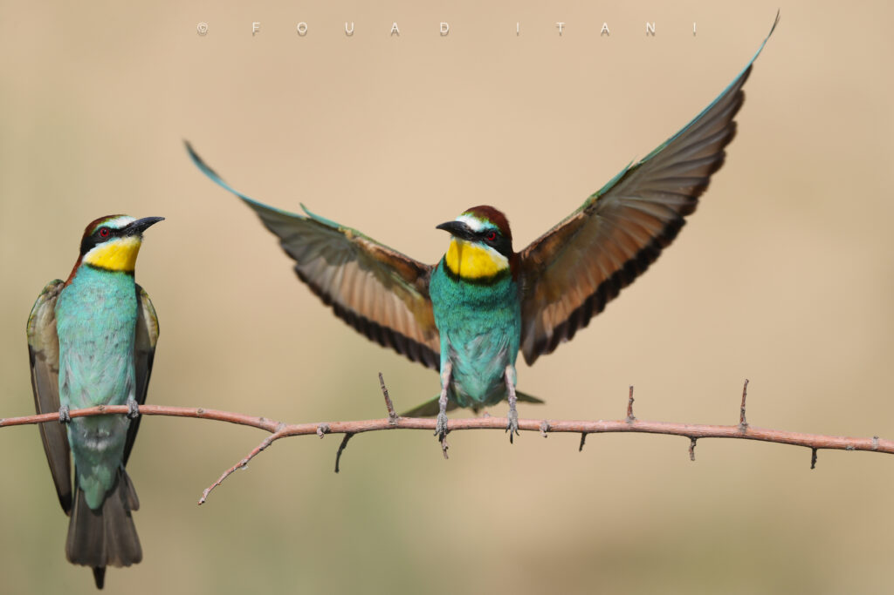
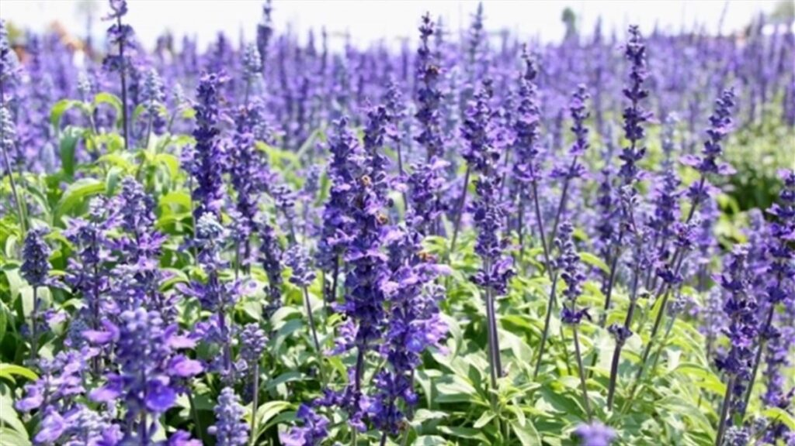
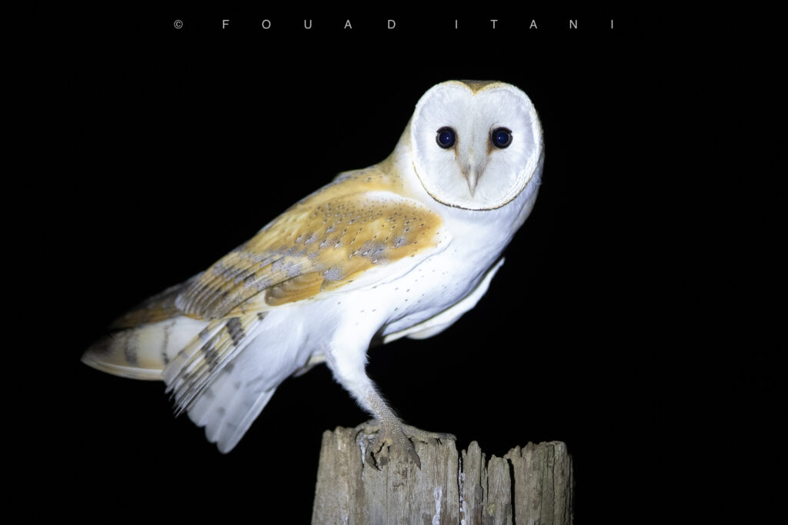

البقاع الشمالي: حصيلة إزالة شباك الصيد تبلغ 38,280 م²
استقصاء البقاع وفريق APU–CABS يزيلان شباك صيد غير قانونية في البقاع الشمالي؛ الحصيلة الإجمالية للحملة تبلغ 38,280 مترًا مربعًا.
استقصاء البقاع وفريق APU–CABS يزيلان شباك صيد غير قانونية في البقاع الشمالي؛ الحصيلة الإجمالية للحملة تبلغ 38,280 مترًا مربعًا.

مثلث لبنان–قبرص–مصر نموذجًا: المصبات والملاحات والبحيرات والمرافئ في حسابات حماية موائل الطيور.

المحميات البرية تغطي نحو ربع مساحة البلاد، وبرامج لحماية المها العربي وغزال الرمال والنعام.

منافسات الملواح ومزاد الصقور المنغولية وتقنيات الرصد والحماية تجتمع مع معدات الصيد والرماية والموروث البحري في مَلهم شمال الرياض.

أكثر من خمسة آلاف منتج في منطقة الأسلحة والذخائر والمستلزمات، وارتفاع عدد شركات أسلحة الصيد والرماية من ثمانٍ إلى إحدى عشرة.

مشاركة عربية في محطة استعداد مهمة قبل بطولة العالم في الدوحة وانطلاق التأهل لأولمبياد لوس أنجلوس.

توثق الصور نشاطات وحدة مكافحة الصيد الجائر APU التابعة لـ MECSHAP، بالتعاون مع جمعية CABS الألمانية وقوى الأمن الداخلي، في البقاع وفي شمال لبنان، في مكافحة أعمال الصيد غير القانونية. ويبدو في الصور رئيس تحرير مجلة صيد، أدونيس الخطيب، الذي يشارك ميدانياً بصفته مدير مركز الشرق الأوسط للصيد المستدام MECSHAP.

عشرة أيام تجمع الصقارة والصيد والرحلات والمغامرات، وتتيح للزوار الاقتراب من موروث حيّ تتوارثه الأجيال.

من البندقية إلى العدسة: كيف يسهم الإعلام في حماية الطيور المهاجرة وتغيير ثقافة التباهي بالقتل.

من لبنان إلى مصر وفرنسا، تسع صور تلتقط حضور الطيور في مشاهد الحياة اليومية، على العشب والأغصان وضفاف الماء.

حصيلة رادار صيد العربي لشهر سبتمبر 2026: توقيف 50 صيادًا، وضبط 294 كائنًا فطريًا، وإنقاذ آلاف الطيور، ومصادرة أسلحة وشباك صيد مخالفة.

مقال أدبي عن محبّي الخيل الحقيقيين: طقوس الفجر، الحرّ معلّمًا، والحضور في الركوب بلا وجهة. من باب الفروسية في مجلة صيد.


تحقيق في تسع خرائط صيد عربية لخريف 2026: المغرب وتونس في 4 أكتوبر، السعودية منذ 1 سبتمبر، الأردن بحصص، لبنان بلا فتح رسمي، وليبيا بقرار حماية.

المصدر: الهيئة الملكية لمحافظة العلا

من درب الجبل اللبناني إلى قاديشا وأرز الشوف وبالوع بلعا: مسارات وصور وإرشادات عملية للمشي والتخييم المسؤول في لبنان.

خفضت دول أوروبية صيد اليمام بنحو 90% على مساري هجرته الرئيسيين. لكن أعداد الطائر سلكت اتجاهين مختلفين: ارتفاع في الغرب، وتراجع مستمر مع بوادر استقرار في الوسط والشرق. فماذا تقول هذه الفجوة عن إدارة طائر لا تتوقف رحلته عند حدود دولة واحدة؟

اختُتم موسم سباقات الطائف مساء السبت 26 أيلول 2026 على ميدان الملك خالد، بعد أمسيتين بلغت جوائزهما الإجمالية 6.2 ملايين ريال، وشهدتا تتويج أبطال أبرز كؤوس الموسم.

من صقلية إلى لبنان وقبرص وليبيا، تتعدد جبهات حماية الطيور المهاجرة من الصيد الجائر، بين القضاء والعمل الميداني والتعاون مع السلطات.

قراءة افتتاحية في تقرير «حالة طيور العالم»: 45٪ من أنواع الطيور المهاجرة في انحدار مستمر، وواحد من كل تسعة مهدد بالانقراض.

مقارنة ميدانية هادئة بين Beretta A400 Xtreme Plus وBenelli SBE 3: نظام الغاز Blink مقابل القصور الذاتي Inertia Driven، ولمن تناسب كل مدرسة.

تحقيق بيئي يرصد تشريح الفقد استناداً إلى أحدث بيانات منظمة بيردلايف إنترناشونال.

توثيق دولي لدمار بيئي في جنوب لبنان منذ تشرين الأول 2023، يطال الغابات والتربة والمياه ويهدد أحد أهم ممرات هجرة الطيور في العالم.

أعلنت وزارة التنمية المحلية والبيئة في مصر قراراً جديداً لتنظيم أعمال الصيد، بالتوازي مع بدء جهاز شؤون البيئة خطة رصد ومتابعة مع انطلاق موسم هجرة الخريف.

حملة خريفية لحماية الطيور المهاجرة في لبنان، وأدونيس الخطيب لـ«صيد»: شراكة ميدانية منذ 2017 تؤكد دور الصياد المستدام في مكافحة الصيد الجائر.

جولة بالصور في معرض كتارا الدولي للصيد والصقور «سهيل 2026»: الصقور والزوار وأجنحة المعرض.
أكد الأمن البيئي السعودي استمرار موسم الصيد المنظم حتى 31 كانون الثاني/يناير 2027، مع التشدد في التراخيص والمناطق المسموح بها.

اختتم معرض كتارا الدولي للصيد والصقور «سهيل 2026» بمشاركة 158 جهة وشركة من 15 دولة.
الأمن البيئي يدعو إلى الالتزام بالتراخيص والأماكن والأنواع المسموح بها خلال موسم الصيد 2026–2027.

النسخة العاشرة من معرض كتارا الدولي للصيد والصقور جمعت التراث والابتكار والتجارة والسياحة، واستقطب مزاد الصقور اهتمامًا واسعًا.

أطلقت المملكة العربية السعودية موسم الصيد البري للعام 2026–2027، في تجربة تدخل عامها السادس وتواصل تطوير نموذج يقوم على تنظيم ممارسة الصيد وربطها بحماية الحياة الفطرية واستدامة مواردها.

البجع الأبيض الكبير — Great White Pelican — بعدسة نايف كريم — أوتوستراد المتن السريع، ربيع 2026

نستعرض ضمن «صيد TV» فيلم «مقناص سعود عبد العزيز البابطين 2025–2026»، الذي يوثّق رحلته إلى أفغانستان، كما نشرته قناة البوادي على يوتيوب. الفيديو: قناة البوادي على يوتيوب .
دراسة تحذّر من تراجع الأنواع المهاجرة، ومعركة لحماية بحيرة ألبانية، وحماية البط الحديدي من كرواتيا الى مصر: مستجدات دولية تفتح أسئلة الموسم.

أدونيس الخطيب حين أسّسنا «صيد»، انطلقنا من قناعة بأن الصيد مسؤولية وثقافة ومعرفة بالطبيعة وأصول الممارسة. فالإنسان الذي يخرج إلى الطبيعة يحتاج أن يعرف طيورها وحيواناتها، وأن يفهم…
مع دخول لبنان موسم هجرة الطيور الخريفية، يكثّف مركز الشرق الأوسط للصيد المستدام ومكافحة الصيد الجائر ( (MECSHAP) )جهوده الميدانية، من خلال وحدة مكافحة الصيد الجائر ( (APU) ) وشبكة…
فرضت الظروف القاسية التي مرّ بها لبنان خلال السنوات الماضية تحدياتها على كثير من المؤسسات والقطاعات، ولم يكن موقع «صيد» بعيدًا عن تداعياتها. واليوم، ورغم استمرار بعض هذه الظروف، ي…

عصفور الشمس الفلسطيني، ويُسمى أيضًا تمير فلسطين ويُعرف بالإنكليزية (Palestine Sunbird)، هو من الطيور الصغيرة المقيمة والمشتية في لبنان. يمتاز الذكر بريش قزحي الألوان قد يظهر أخضر…
مهما ابتعد الإنسان عن تفاصيل الطبيعة، فهو يعود إليها بطرق مختلفة. لأنها الذاكرة التي لا تنطفئ في داخله والملاذ الأخير الذي يعيد له توازنه. تقدِّم مجلة "صيد فقرة الطبيعَلوجيا"، وهي…

أثبتت تجربة منع الصيد في لبنان خلال السنوات الفائتة عدم جدواها، إذ لم توقف الانتهاكات، بل حوّلتها إلى أنماط أكثر خطورة. فقد ظهرت شريحة واسعة من القوّاصين الذين يستخدمون بنادق رخيص…

العُوَيْسِق أو العوسَق الصغير، ويُعرف بالإنكليزية باسم (Lesser Kestrel)، هو أحد أنواع الصقور التي تتكاثر صيفًا بشكل عَرَضي. ويُعتبر مهاجرًا عابرًا إلى لبنان، حيث يظهر في المناطق ش…

إنها أسرار الأرض... الأعشاب البرية... الحكم المخبّأة في طيّات التربة والصخور. هناك نباتات لا تُقطف، بل تُحترم. ومن بينها، الشكران... العشبة التي حملت في صمتها حكاية السمّ والعلاج،…

طائر الوروار الأوروبي، ويُعرف بالإنكليزية باسم (European Bee-eater)، هو طائر مهاجر شائع في لبنان. وقد سُجّل حديثًا وجوده في عدّة مناطق لبنانية خلال فصل الصيف، مما يطرح احتمال أن ي…

إنها أسرار الأرض... الأعشاب والنباتات... إنها حكمة الصمت، لغة الطبيعة التي لا تُقال بل تُفهم. في كل ورقة خضراء، وفي كل جذر حكاية شفاء لا تنتهي... الاسم العربي الشائع : الزوفا – أح…

بومة المخازن أو بومة الحظائر وتعرف بالإنكليزية ( barn owl ) هي مُقيمة ومُفرخة شائعة ومنتشرة في لبنان على الساحل وفي الجبال وفي سهل البقاع يمكنها التكيف مع مجموعة واسعة من الموائل،…
في البراري الموحشة والمحيطات الهادئة، لا تحكم قوانين الغابة دائمًا بشريعة الجوع. ثمة مشاهد مدهشة في مملكة الحيوان تُسجل فيها جرائم قتل بلا هدف غذائي، بل بدوافع اجتماعية أو تناسلية…
صقر الشاهين ( Falco peregrinus ) ليس مجرد طائر جارح، بل أعجوبة طبيعية حقيقية أبهرت العلماء منذ عقود. إنه أسرع كائن حي معروف على وجه الأرض، إذ تصل سرعته أثناء انقضاضه إلى أكثر من 3…
في كل ربيع وخريف، تبدأ سماء الأرض باستقبال مشهد من أعظم عجائب الطبيعة: ملايين الطيور تنطلق في رحلاتها الشاهقة، تعبر قارات، تجتاز صحارى، تحلّق فوق البحار والجبال، دون أن تضل طريقها…